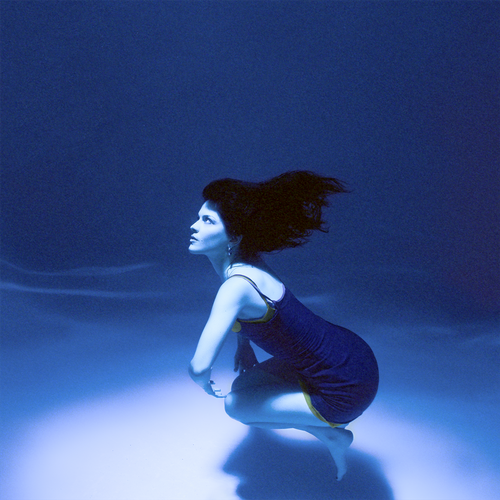

my music
brat - charli xcx
charli xcx's latest album "brat" — released in june 2024 — is a bold and energetic exploration of her journey as an artist, blending her electro-pop roots with the raw, edgy sounds of the underground club scene.

submarine - the marias
"submarine" is an ep by the marías, released in september 2017. known for their dreamy, bilingual blend of indie pop, jazz, and psychedelia, the marías create a lush, immersive atmosphere throughout the project.
homogenic - bjork
björk's homogenic, released in 1997, is a landmark album in her career, marking a shift towards a more cohesive and intense sound. the album blends electronic beats with orchestral strings, creating a unique sonic landscape that reflects björk's exploration of identity and emotion.